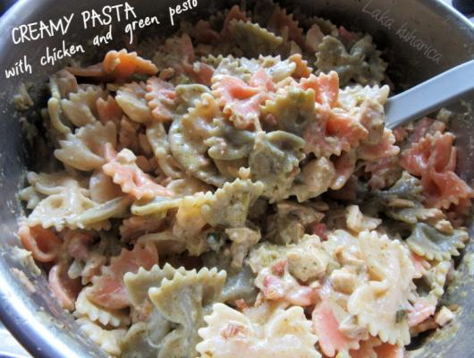

Creamy pasta with chicken and green pesto

Image source
About
Super quick creamy pasta with green pesto and chicken makes a great weekday meal.
Ingredients
50 g butter
2 spring onions, finely sliced
2 cloves garlic, chopped
200 g ready-roasted chicken breasts, diced
50 g cooked ham, diced
100 g green pesto of your choice
100 g sour cream
50 g Parmesan cheese, grated
150 ml milk
250 g cooked short pasta shapes (farfalle, ziti, fusilli)
Preparation
Sauté spring onions and garlic for 2-3 minutes in butter.
Add ham, continue to sauté briefly.
Stir in the chicken and heat through.
Stir in sour cream, pesto and grated cheese.
Add milk stir.
Add cooked pasta, stir to coat. Serve immediately with more grated cheese.